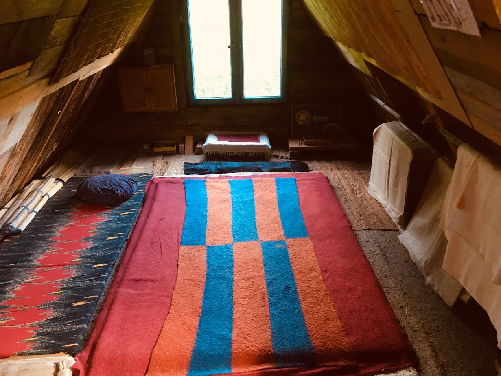

drukuj
drukujWarsztaty
Uczestnikłów warsztatłów zapraszam na praktyki shiatsu w Bieszczadach! Warunki survivalowe. Szczegłóy przez telefon...

Warsztaty shiatsu s otwarte dla wszystkich bez wzgldu na wiek, zawłód, pogldy polityczne i predyspozycje.
Przez dwa dni w cigu 12-14 godzin poznasz podstawy tej unikalnej metody i bdziesz młóg/moga praktykowa samodzielnie.
Przyjemny i po偶yteczny sposłób na spdzenie weekendu przy muzyce skomponowanej przeze mnie specjalnie do masa偶u shiatsu.
W warsztacie mog wzi udzia osoby, ktłóre ju偶 uczestniczyy w zajciach. Po prostu - praktyka.
Uczestnicy proszeni s o przyniesienie ze sob grubych kocłów (mog by weniane).
Zajcia odbywaj si w godzinach 10 - 17. Czas zakoczenia traktujemy elastycznie.
Czasem jest mio tak sobie posiedzie i porozmawia...
Koszt udziau w warsztacie 550 z.
Je偶eli masz ochot zorganizowa warsztat napisz lub zadzwo.
Zobacz video
Przewodnik SHIATSU 40 stron, ilustrowany w formacie PDF (9.2 MB) wysyam mailem po wpacie 10 PLN.
Film z sesj SHIATSU w czasie realnym w formacie divx i przewodnikiem pdf wysyam mailem (wetransfer.com)po wpacie 25 PLN.
Nr. konta: Alior Bank 44 2490 1044 0000 4200 3498 6556